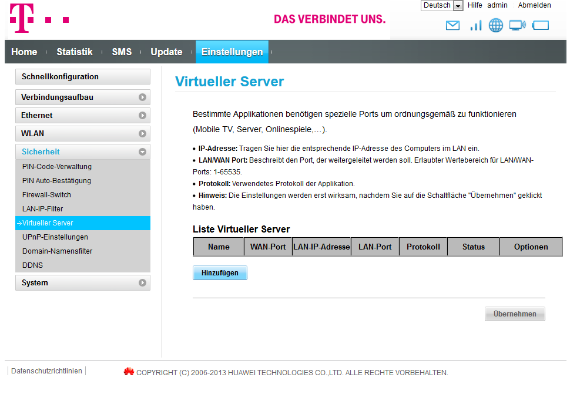

Hallo Leute,
villeicht weiß einer von euch wo man beim T-Mobile Home Cube die Ports in den einstellungen finden kann. Jetzt hab ich ein Starkes internet kann aber mit keinem zusammen spielen weil mein NAT Typ Strikt ist und nicht offen oder moderat und das kann man leider nur bei den ports umstellen bin aber zu dumm die zu finden.
MFG Neko
Wenn es die E5170 ist, dann findest du das unter Sicherheit - Virtueller Server. 
Hi Neko,
wichtig wäre vor allem, das du noch den APN änderst, sonst bringt die Portweiterleitung auch nicht viel beim zocken.
Dazu geh bitte auf der Router Site auf Einstellungen -> Verbindungsaufbau -> Profilverwaltung und wähle dort "neues Profil". Dann gibst du diese Daten ein...
Profilname: Internet
Benutzername + Passwort leer lassen
APN: statisch ausgewählt lassen und im nächsten leeren Feld darunter
business.gprsinternet eingeben und "speichern" klicken.
Das wars dann auch schon.
Viel Spass beim zocken!
LGFW
Bearbeitet von KartoffelsuppeAm 23.6.2017 um 15:10 schrieb Fichtlwichtl:Hi Neko,
wichtig wäre vor allem, das du noch den APN änderst, sonst bringt die Portweiterleitung auch nicht viel beim zocken.
Dazu geh bitte auf der Router Site auf Einstellungen -> Verbindungsaufbau -> Profilverwaltung und wähle dort "neues Profil". Dann gibst du diese Daten ein...
Profilname: Internet
Benutzername + Passwort leer lassen
APN: statisch ausgewählt lassen und im nächsten leeren Feld darunter
business.gprsinternet eingeben und "speichern" klicken.
Das wars dann auch schon.
Viel Spass beim zocken!
LGFW